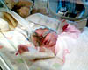
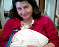
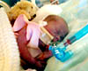
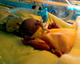

<!doctype html public "-//w3c//dtd html 4.0 transitional//en">
<html>
<head>
   <meta http-equiv="Content-Type" content="text/html; charset=iso-8859-1">
   <meta name="Author" content="Mike Carpenter">
   <meta name="GENERATOR" content="Mozilla/4.73 (Macintosh; U; PPC) [Netscape]">
   <title>Poppy's Progress</title>
</head>
<body text="#000000" bgcolor="#FFFFFF" link="#FF0000" vlink="#800080" alink="#0000FF">
&nbsp;
<table CELLSPACING=0 CELLPADDING=0 COLS=1 WIDTH="600" >
<tr>
<td>
<center></center>
<p>
<A HREF="index.html"><font face="Verdana"><font size=-1><font size=-1>Return to Poppy's Page</font></font></font></A>

<!-------------------Diary starts here------------------->

<a name="280701"></a><p><b><font face="Verdana"><font size=-1><font color="#FF9999">28th July 2001</font></font></font></b>
<br><font face="Verdana"><font size=-1><font color="#000000">Poppy has had another good day today - she was described as being "as good as gold". She is still having 8.5ml of milk and all systems are working well - as Mike discovered when he changed her nappy!</font></font></font>
<br>&nbsp<br>&nbsp
<a href="./diary/poppy280701.html"></a>
<br>&nbsp

<p><b><font face="Verdana"><font size=-1><font color="#FF9999">27th July 2001</font></font></font></b>
<br><font face="Verdana"><font size=-1><font color="#000000">Poppy is continuing to do well today. She is now on 8.5ml of milk per hour. this is the correct amount for her weight and from now on the amount she has will be governed by the amount of weight she puts on.</font></font></font>
<br>&nbsp<br>&nbsp

<a name="260701"></a><p><b><font face="Verdana"><font size=-1><font color="#FF9999">26th July 2001</font></font></font></b>
<br><font face="Verdana"><font size=-1><font color="#000000">Today Poppy came off the ventilator and went on to CPAP. She decided to take out the ventilator tube herself this morning so the nurses took the opportunity to put her on CPAP. she has also had her long line removed so she is only being fed milk now. She is having 7ml per hour and tolerating it. This evening she is having a blood transfusion.</font></font>
</font><br>&nbsp<br>&nbsp
<a href="./diary/poppy260701.html"></a>
<br>&nbsp

<p><b><font face="Verdana"><font size=-1><font color="#FF9999">25th July 2001</font></font></b>
<br><font face="Verdana"><font size=-1><font color="#000000">Poppy has had a mainly quiet day today. She was weighed this morning and is now 2lb 7oz - which means she has put on a pound in weight. She is really starting to put on weight fast now. She is taking 6ml of milk per hour and seems to be tolerating it. If she continues like this she should be off the ventilator and back on the CPAP ventilation by Friday.</font></font>
<br>&nbsp<br>&nbsp

<a name="240701"></a><p><b><font face="Verdana"><font size=-1><font color="#FF9999">24th July 2001</font></font></font></b>
<br><font face="Verdana"><font size=-1><font color="#000000">Poppy is a lot happier today and Sharon was able to cuddle her for over an hour. Poppy enjoyed that, and her oxygen requirement went down as a result. The doctors did discuss taking her off of the ventilator today and moving her onto CPAP, but the support she is getting for her breathing is just a little too high at the moment. She may come off tomorrow or Thursday. Poppy's milk intake has been increased to 5ml an hour today. If she tolerates the increase she should be able to cope well without the fluid feeds she has had to keep having intravenously. This means that the long line will be removed. There are no plans for that yet, but its only a matter of time. Poppy had a brain scan this afternoon and an eye test this morning. Both showed that Poppy was doing well.</font></font></font>
<br>&nbsp<br>&nbsp
<a href="./diary/poppy240701.html"></a>&nbsp
<a href="./diary/poppy240702.html"></a>
<br>&nbsp

<a name="230701"></a><p><b><font face="Verdana"><font size=-1><font color="#FF9999">23rd July 2001</font></font></font></b>
<br><font face="Verdana"><font size=-1><font color="#000000">Poppy is not feeling particularly happy today although she is well; she is just not enjoying being touched at all. Her milk feeds have been increased to 4ml and hour today and she seems to be ok with that. </font></font></font>
<br>&nbsp<br>&nbsp
<a href="./diary/poppy230701.html"></a>
<br>&nbsp

<a name="220701"></a><p><b><font face="Verdana"><font size=-1><font color="#FF9999">22nd July 2001</font></font></font></b>
<br><font face="Verdana"><font size=-1><font color="#000000">Poppy's milk has been increased again to 3ml an hour, which she seems to be happy with. She is contented and well, enjoying holding Mike's hand this evening. Her oxygen requirements are slowly falling and we are looking forward to her going onto the CPAP again in the next couple of days.</font></font></font>
<br>&nbsp<br>&nbsp
<a href="./diary/poppy220701.html"></a>
<br>&nbsp


<!-------------------Diary ends here------------------->

<br>&nbsp;
<p>&nbsp;</td>
</tr>
</table>
<font face="Verdana"><font size=-1><font size=-1>Last updated 08/07/2001 20.25
</body>
</html>
